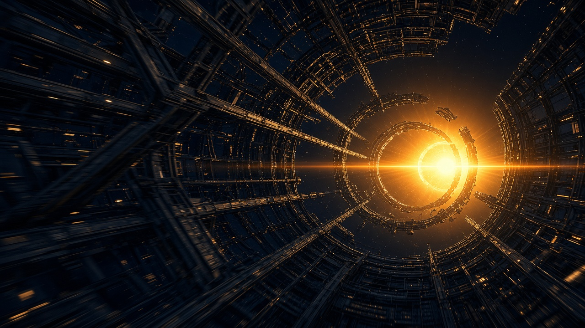
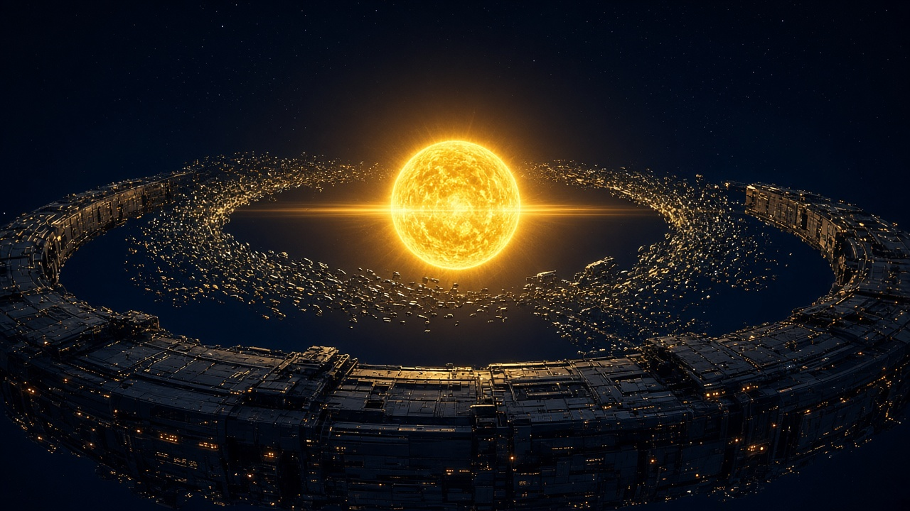
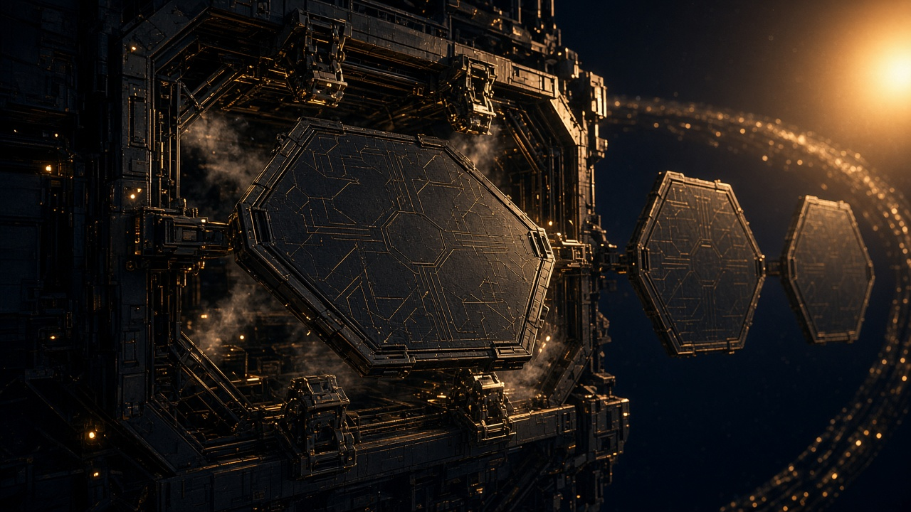
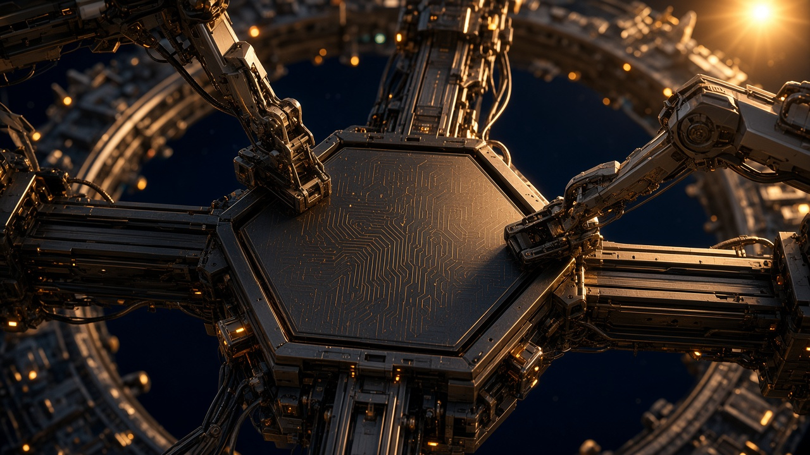
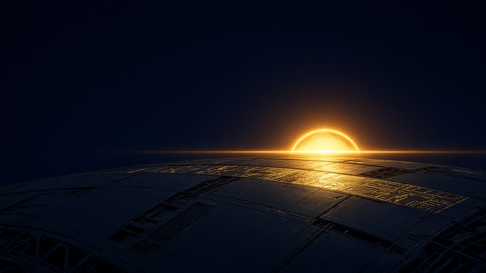

Through the outer ring, toward the sun.
Camera cruises the interior of an outer Dyson ring while an inner ring self-assembles around the sun ahead. Panels dock, trusses lock, and the flight settles on a sunrise over the ring's mechanical horizon with one horizontal flare — the brand lockup, seen in the world. This sheet fixes the world, shots and light so a later 3D or video build lands in the same place.

Inside the structural corridor. Girders carry motion blur; the sun and the silhouetted inner ring sit in the aperture ahead. Opening beat — travel, not landing.
01-outer-ring-flythrough.jpg

Establishing wide from just above the outer ring's plane. Inner ring two-thirds built; a swarm of panels streams into the gaps. Horizontal flare through the sun.
02-wide-two-rings-sun.jpg

A circuit-etched panel drifts the last metre into its bay; latches rotate closed, pins align, a strut slides home. Two more panels queue behind. Frozen thruster vapour.
03-self-assembly-docking.jpg

Overhead of a truss node; two articulated arms seat a panel, ring curvature and amber beacons in bokeh behind. Alternate mechanical detail.
03b-self-assembly-manipulators.jpg

Skimming the inner ring's plating; the sun crests the mechanical horizon with one razor-thin horizontal flare. Sunlit plating reveals the gold circuit hairline. Upper-left two-thirds is clear navy for the headline. Poster and reduced-motion still.
04-sunrise-end-frame-flare.jpg
One key light
The sun lights everything. No fill, no cool ambient, no studio rim. Shadow sides fall to navy, not grey. Form is described by hard gold rim light on bevels and edges — silhouettes with lit edges.
The flare
A single thin horizontal anamorphic streak at the sun's horizon line — the same hairline as the logo. No starbursts, ghost rings or rainbow fringing. It is the only lens artefact in frame.
Practicals
Beacons and ports are warm amber only. The system teal and every retired neon are absent from this world.
Circuit language
The logo's gold trace pattern appears only as an etched surface on panel faces and sunlit plating. It never glows on its own and is never a HUD, wireframe or floor.
Camera path (must stay)
Inside the outer ring → clear the aperture → wide reveal of sun and inner ring → pass a self-assembly beat close enough to see latches → settle and hold on shot 04. Roughly 8–12 s if linear. The headline sits over the end frame, not over the flight.
Mechanical honesty
Panels dock, latches close, struts lock. No dissolves, no particle magic, no energy ribbons.
Bans carried over
No palace, gates, courtyards, lanterns, palms, glass UI slabs, teal energy ribbons, wireframe tech-sun gadget, floor grid. No people, no text or UI inside the scene.